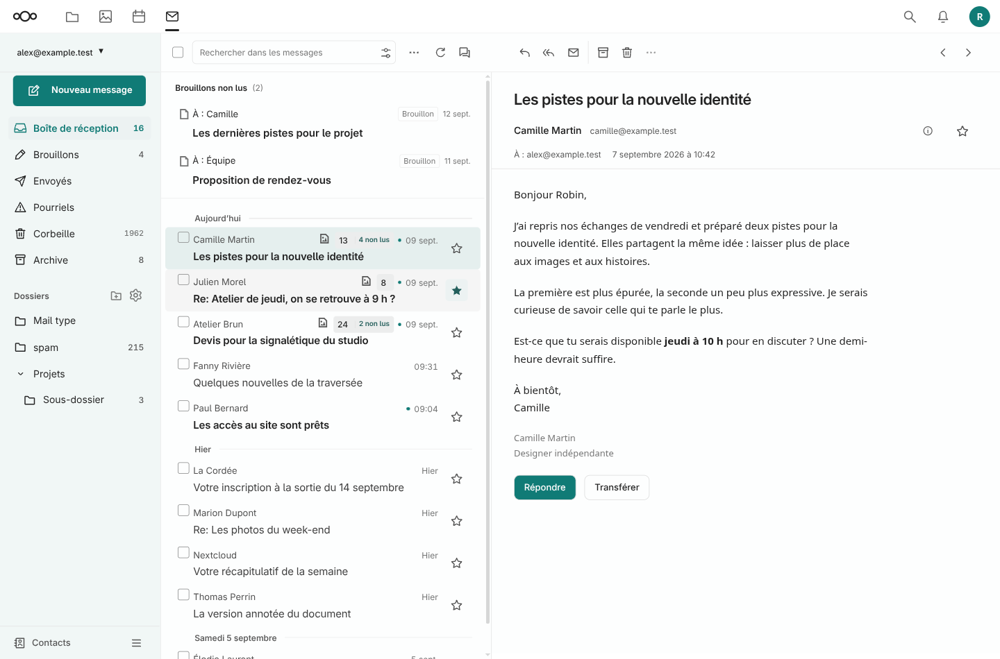
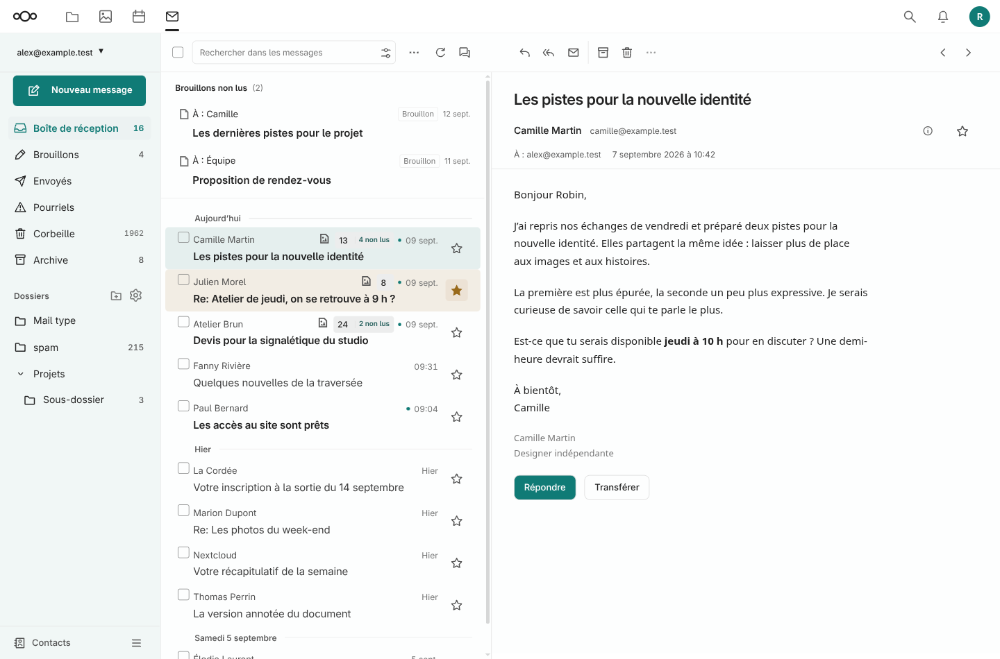
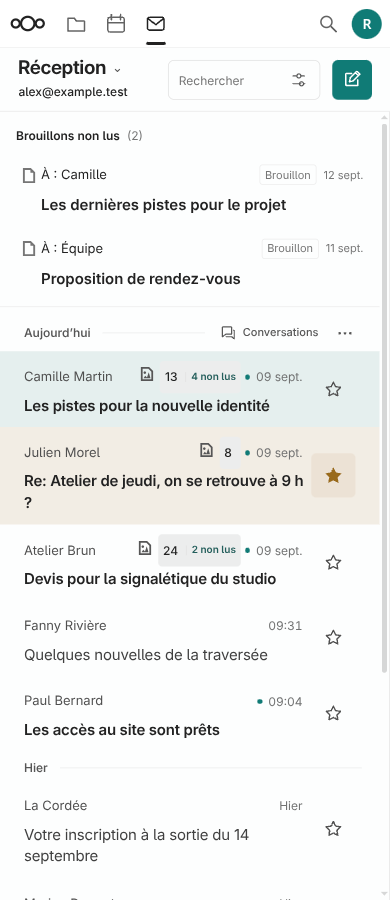
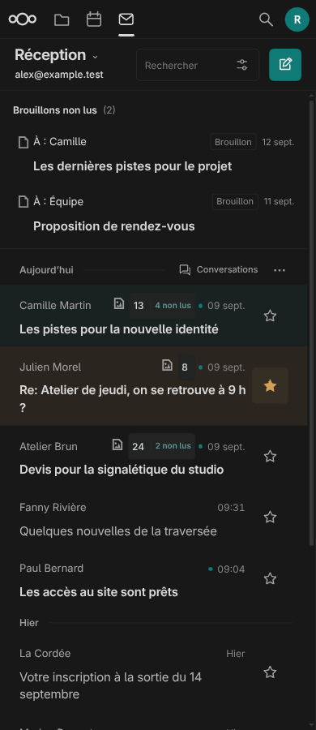

Un style indépendant du script, un suivi plus visible
1.7.2 installée le 12 septembre 2026, 33 fichiers vérifiés. Le CSS compilé sur le serveur a été testé dans le navigateur local.
Constat et évolution
Retour utilisateur : malgré l’installation de la 1.7.1, l’ancien compteur restait visible dans sa session.
Vérification : les fichiers correspondaient au dépôt. Le CSS réellement compilé produisait le nouveau rendu dans l’aperçu. La session réelle restait inaccessible sans authentification ; la cause exacte du décalage n’est donc pas établie.
Robustesse : déplacement des styles vers le thème. Le compteur reste discret même sans initialisation JavaScript, et le script peut se raccorder à une liste déjà créée.
Repérage : étoile ambrée pleine, fond du bouton renforcé et ligne légèrement teintée pour les messages suivis. La sélection reste en bleu-vert.
Livraison : sauvegarde externe, installation et compilation. Les tests sans script et d’initialisation tardive passent aussi avec le CSS extrait du serveur après installation.
Avant : suivi discret de la version 1.7.1


Aperçu avec messages fictifs, ordinateur.

390 px, cible de suivi de 44 px.

Mode sombre.
Limites et restauration
15 scénarios d’interactions, 5 scénarios sans script/initialisation tardive, rejoués avec le CSS compilé installé, et 5 diagnostics d’installation. Les données et actions mail sont simulées. Aucune opération réelle sur les mails et aucune validation de la session authentifiée de l’utilisateur.